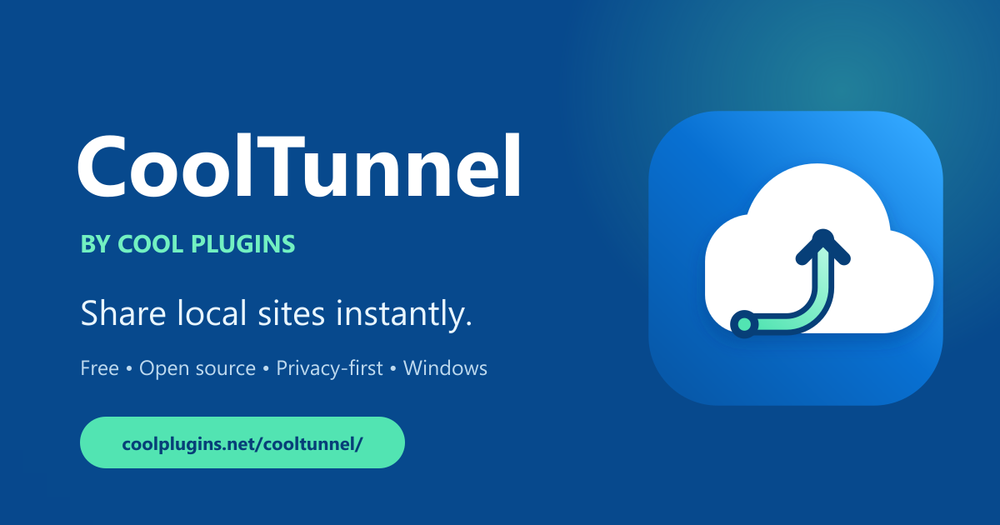
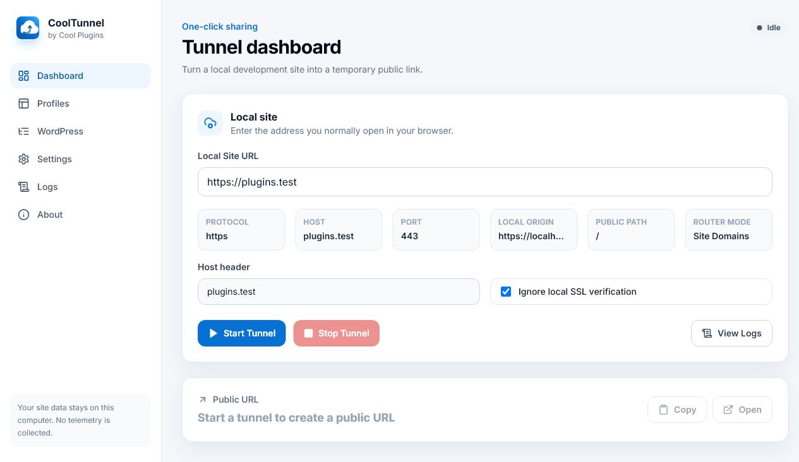

Quick Tunnel sharing
Starts and stops Cloudflare Quick Tunnels with live status, logs, copy and open controls.
Free Windows utility · MIT open source
Turn a Laragon, Local, XAMPP or WampServer site into a temporary public preview link—without changing your database or creating an account.

Built for local development
Starts and stops Cloudflare Quick Tunnels with live status, logs, copy and open controls.
Handles Site Domains, localhost ports, virtual hosts and subfolder installations through a private loopback proxy.
Reversible, backed-up fixes keep internal links, media, wp-admin and redirects on the temporary public hostname.
Save local URLs and WordPress paths, favorite common projects and share sanitized profile packs with teammates.
No account, telemetry or remote data collection. Settings and diagnostic information stay on your computer.
Context-isolated Electron APIs, loopback-only proxying, safe process launching and reversible file changes.

A clear workflow
Get started
Download the Windows installer and complete setup.
Enter a local URL or save it as a reusable profile.
Start the tunnel and send the temporary public URL.
Verify downloads with the SHA-256 checksum supplied beside every GitHub release.
Frequently asked questions
No. It creates temporary preview links for development and testing. Cloudflare Quick Tunnels have no SLA and are not intended for production hosting.
No. CoolTunnel uses marked, reversible files and timestamped backups. Database URLs remain unchanged.
No. CoolTunnel has no telemetry, account requirement or remote collection of site paths and logs.
Use the CoolTunnel support page and include a redacted diagnostic bundle when reporting an issue.